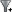
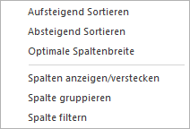
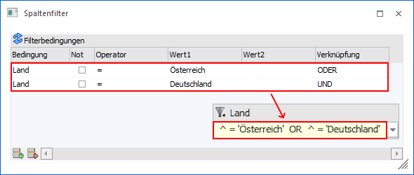
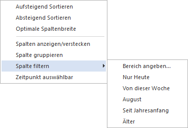
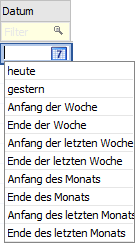
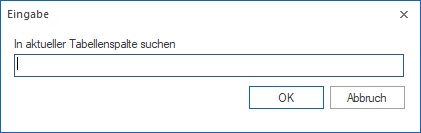

WinLine Bedienung - Arbeiten innerhalb von Tabellen
Für das Arbeiten in Tabellen stehen folgende Funktionen zur Verfügung:
Ø Suchzeile
Durch Anwahl des Hauptfilter-Symbols, welches zu sehen ist wenn der Mauszeiger auf die Überschriftenzeile gelegt wird, kann eine Suchzeile aktiviert werden. In dieser Suchzeile kann durch Eingabe eines Begriffs in jeder Spalte schnell und zielgenau gesucht werden.
Beispiel

Eine Suche (Filterung) kann dabei jederzeit über das Entfernen des Suchbegriffs oder durch Anwahl des

Symbols der Spalte rückgängig gemacht werden.Hinweis
Wenn der Inhalt einer Spalte wiederkehrend ist, dann wird zur einfacheren Suche eine Auswahlliste angeboten.

Spaltenfunktionen
Innerhalb der Spalten können die speziellen Spaltenfunktionen
über ein Pfeilsymbol  aktiviert
werden, wobei das Symbol angezeigt wird, wenn der Mauszeiger auf eine
Spaltenüberschrift geführt wird. Bei Anwahl des Pfeilsymbols mit der linken
Maustaste stehen folgende Möglichkeiten zur Verfügung:
aktiviert
werden, wobei das Symbol angezeigt wird, wenn der Mauszeiger auf eine
Spaltenüberschrift geführt wird. Bei Anwahl des Pfeilsymbols mit der linken
Maustaste stehen folgende Möglichkeiten zur Verfügung:

Ø Spalte sortieren
Über die Auswahl "Aufsteigend Sortieren" bzw. "Absteigend Sortieren" kann der Inhalt der Spalte sortiert werden.
Hinweis 1
Sollte bereits in der Spalte sortiert werden, dann wird auf
die Art Sortierung durch ein - bzw.  -Symbol hingewiesen.
-Symbol hingewiesen.
Hinweis 2
Die Sortierung wird auch durchgeführt, wenn direkt auf die Überschrift geklickt wird (d.h. nicht auf das Pfeilsymbol), Dabei erfolgt zunächst eine aufsteigende Sortierung und bei nochmaliger Anwahl der Überschrift eine absteigende Sortierung.
Ø Optimale Spaltenbreite
Über den Button "Optimale Spaltenbreite" wird automatisch die Spalte auf die optimale Größe eingestellt, so dass innerhalb der Spalte bei jedem Datensatz die entsprechenden Informationen komplett angezeigt werden können.
Ø Spalten anzeigen/verstecken
Mit Hilfe dieser Funktion wird das Fenster "Spalten anzeigen/verstecken" geöffnet. Hier kann der optische Aufbau der Tabelle (Reihenfolge der Spalten) angepasst werden.
Ø Spalte gruppieren
Über den Button "Spalte gruppieren" wird innerhalb der Tabelle nach dem Inhalt der Spalte gruppiert (bis zu 5 Ebenen sind möglich). Dieses hat folgende Auswirkungen:
ü Die Spalte wird aus dem Aufbau der Tabelle entfernt.
ü Pro gleichem Objekt der Spalte wird eine neue Zeile mit "Spaltenname: Objektname (Anzahl Datensätze)" gebildet und die zugehörigen Datensätze unter dieser aufgeführt.
ü Jede erzeugte Zeile (Gruppierung)
kann durch Anwahl des Buttons geschlossen bzw.  geöffnet werden.
geöffnet werden.
ü Das Kontextmenü der rechten Maustaste (auf einer Gruppierungsüberschrift) bietet weitere Funktionen ("Alle Gruppierungen schließen", "Alle Gruppierungen öffnen" und "Gruppierung aufheben").
Hinweis
Um eine Gruppierung wieder aufzuheben wird auf die entsprechende Gruppierungsüberschrift mit der rechten Maustaste gedrückt und der Button "Gruppierung aufheben" ausgewählt.
Beispiel
Es wird in einer Debitorenliste nach der vorhandenen Spalte "Land" gruppiert.

Ø Spalte filtern
Über den Button "Spalte filtern" kann mit Hilfe des Fensters "Spaltenfilter" innerhalb der Spalte nach selbst zu definierenden Datenbereichen gefiltert werden (nähere Informationen siehe Kapitel "Spaltenfilter").
Nach Anwahl des Buttons "Ok" wird die getroffene Filterung
als Suchbegriff in die Suchzeile der Spalte übertragen und angewendet. Sofern
die Filterung nicht mehr benötigt wird, kann dieses über das Entfernen des
Suchbegriffs oder durch Anwahl des Symbols der Spalte entfernt werden.
Zusätzlich steht bei Anwahl des Pfeilsymbols die Auswahl "Spaltenfilter entfernen"
zur Verfügung.
Beispiel

Hinweis
Bei Spalten mit einem Datumsinhalt wird zusätzlich ein Untermenü mit folgenden Einträgen angeboten:

ü Bereich angeben…
Es wird der
Spaltenfilter geöffnet.
ü Nur Heute
Es werden nur
Datensätze mit dem aktuellen Tagesdatum angezeigt.
ü Von dieser Woche
Es werden nur
Datensätze der aktuellen Woche angezeigt.
ü Aktueller Monat (hier
"August")
Es werden nur Datensätze des aktuellen Monats angezeigt.
ü Seit Jahresanfang
Es werden nur
Datensätze des aktuellen Jahres angezeigt.
ü Älter
Es werden nur Datensätze
angezeigt, welche vor dem aktuellen Jahr liegen.
Ø Zeitpunkt auswählbar
Handelt es sich um eine Spalte des Typs "Datum", so wird zusätzlich die Auswahl "Zeitpunkt wählen" angeboten. Durch Aktivierung dieser Option wird bei Eingabefeldern der Spalte die Zeitpunkt-Auswahl zur Verfügung gestellt.
Beispiel

Ø Suchen in Tabellenspalte
Neben dem Spaltenfilter oder der Suchzeile kann über die Funktion "Suchen in Tabellenspalte" immer in einer Spalte nach einem Begriff gesucht werden.

Die Suche kann über die folgenden Wege aufgerufen werden:
ü Kontextmenü der rechten
Maustaste
Im Kontextmenü der rechten Maustaste steht die Funktion "Suchen in
Tabellenspalte" zur Verfügung. Durch Anwahl der Funktion öffnet sich das Fenster
"Eingabe" in welchem ein Suchbegriff eingegeben werden kann. Mit Anwahl des
Buttons "OK" erfolgt die Suche in der Tabellenspalte.
ü Taste F6
Durch Anwahl der Taste
F6 öffnet sich das Fenster "Eingabe" in welchem ein Suchbegriff eingegeben
werden kann. Mit Anwahl des Buttons "OK" erfolgt die Suche in der
Tabellenspalte.
Hinweis
Wurde bereits ein Suchbegriff eingegeben, so wird durch nochmalige Anwahl der Taste F6 die Suche fortgesetzt.
ü Tastenkombination STRG + F6
Da
in einigen Programmfenstern die Taste F6 belegt ist, kann durch Anwahl der
Tastenkombination STRG + F6 ebenfalls das Fenster "Eingabe" geöffnet werden.
Nach Eingabe eines Suchbegriffs erfolgt durch Anwahl des Buttons "OK" die Suche
in der Tabellenspalte.
Hinweis
Wurde bereits ein Suchbegriff eingegeben, so wird durch nochmalige Anwahl der Tastenkombination STRG + F6 die Suche fortgesetzt.